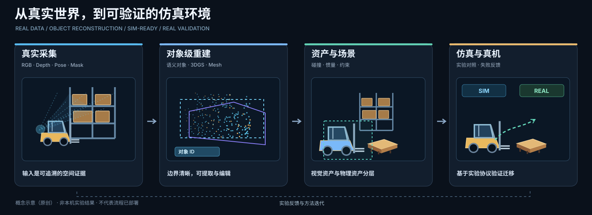
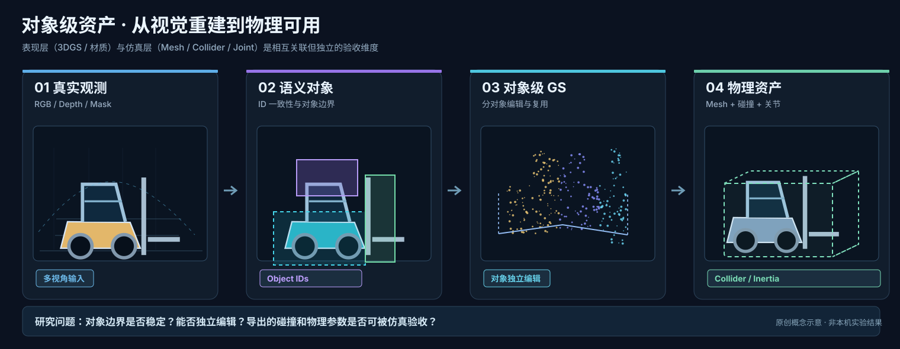
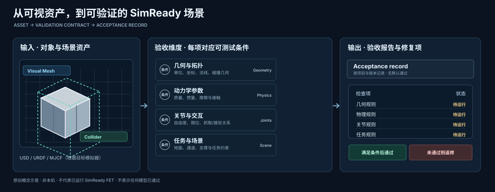

用可复核证据，把 Real→Sim→Real 的生成与使用瓶颈拆成可实验命题。
真源 knowledge/maturity.md · 导读 knowledge/board-intro.md · 写作口径 docs/board-authoring.md
点击节点查看详情 · 实线=外部证据 · 虚线=待本机 · 点线=关键缺口


路线决策：默认栈维持（非效果测量结论）

方法级比较 · 缺数填「无记录/待验证」· 不编造 · 四标签独立于真机列
| 方法 | 阶段目标 | 输入 | 核心能力 | 作者指标 | 代码许可 | 真机 | 本机 | 限制 | 对应实验 |
|---|---|---|---|---|---|---|---|---|---|
| ObjectGS | 对象 densify | 对象锚点 | 锚点 densify | LERF-Mask mIoU~88（论文·非本机） | 待验证 | 无记录 | 无记录 | 缺协议/真机 | P1 相关 |
| DIGS | 边界保真 | 分割边界 | training-free | 91.71 mIoU / 86.91 mBIoU（论文·非本机） | 待验证 | 无记录 | 无记录 | 缺真机对照 | P1 相关 |
| DISCOVERSE | GS+MuJoCo 闭环 | 3DGS 资产 | 真机 ACT/DP（外部） | ACT 55%→86.5%（论文测量·非本机） | 开源复现 | 外部有 | 无记录 | 协议字段卡面弱 | 对照基线 |
| AtlasGS | Atlanta 平面 | 室内扫描 | 平面重建 | Replica F 87.35（测量·非本机） | 开源复现 | 无记录 | 无记录 | 本机同向待做 | 开放问题 |
| Inpaint360GS | 360° 修复 | 360 观察 | 对象修复 | FID 35.93（作者·非本机） | 待验证 | 无记录 | 无记录 | ∥RQS 分轴 | 开放问题 |
| AffordCraft | 图+任务→sim-ready | 图/任务 | G 五元组 | 85.15% vs 生成≤45%（论文·非本机） | 待验证 | 无记录 | 无记录 | 缺真机 URL | P2 |
| SimReady-Foundation | 字段级规范 | 资产字段 | FET003 | 规范轨（无真机要件） | 开源 | 不适用 | 无记录 | 规范≠真机 A | P2 映射 |
| X2Real | 场景级对照 | 场景任务 | sim↔真机相关 | progress r=0.84（8 任务·非本机） | 待验证 | 外部有 | 无记录 | 场景级非对象级 | P3 相关 |
四标签（外|复|本|工）与矩阵「真机」列正交 · 本机无记录不静默变绿 · 出处类型：外部公开 / 概念示意 / 本机实验
不冻栈 / 判官台 / 采矿→核链→并网。展开后才见内容。术语： RSI · stage-win · 并网
task-skill 快环 + meta-skill 慢环 · stage-win 门禁 · 真源 propositions/不冻栈.md
第一性原理 → 六步诊断 → A/B/C 采信 · 真源 propositions/判官台.md
开放问题驱动采矿窗 · URL 核链后入 knowledge/cards/ · dashboard-sync